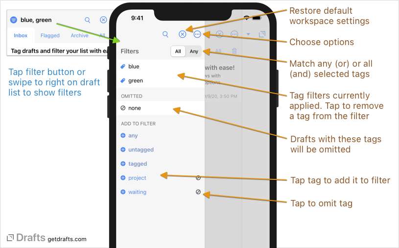

Search & Filtering
Beyond the draft list, there is an additional pane that allows the draft list to be filtered by tags to limit what is displayed based on tags you have assigned. The search field at the top of the draft list can also be used to apply a query to filter the list.
Table of Contents
Searching Drafts
Use the search field (magnifying glass icon) near the top of the draft list to search for drafts. The search will filter the current view to show only those drafts which match the query. The same query options described below are available when using Quick Search.
Basic Queries
Simple searches are just one or more terms, separated by a space. Drafts will return results match all the terms entered, so red blue will find only drafts which contain the words red and blue, not necessarily together.
Advanced Query Options
The search field also supports several more advanced options to hone your searches:
- “Exact Phrase”: Wrap more than one term in double-quotation marks to find the full phrase, e.g.
"red parachute"will find a draft with the sentence “She used a red parachute when skydiving”, but not the draft “She used a red and blue parachute…” - -Omit: A word or phrase from the results by prefixing with a “-“ hyphen character. e.g.
green -bluewill find drafts with the wordgreenbut NOT the wordblue. Can be combined with exact phrase markup, like:-"red parachute". - title:TERM: Prefix a term with
title:to find only drafts with the term in the first line of the draft. Can be combined with exact phrase markup, like:title:"My Draft". - tag:TERM: Prefix a term with
tag:to only search for tags assigned to the draft matching the term. For example,tag:bluewould find only drafts with the tagblueassigned. AND(Bolean Operator):ANDis not necessary, as a space between terms in the query is already assumed to be “and”, but the operator can be used if it makes a query easier to read. For example,red AND bluewill find the same drafts asred blue.OR(Boolean Operator): TheORoperator can be used between terms to apply boolean “or” logic, so thatred OR bluewould find drafts with eitherredorbluein the text, not requiring both be present.- /regular-expression/: Regular expression matches can also be used to contruct advanced queries by wrapping the term in forward slashes. Using regular expressions is a bit beyond the scope of this guide, but assume you are constructing an expression which will match against the entire content of the draft. A few examples:
/.*\[\[.*\]\].*/: Find any drafts with[[wiki-style]]links./.*\n[^`]*\n.*/: Find drafts with triple-tick Markdown code blocks./\d+/: Find drafts with a number as the first character.
Note on Regular Expression Queries
Regular expression queries have to scan the entire text of drafts and can be a little slow on large datasets. If you find them performing poorly, consider using them when the draft list is already filtered by a workspace or tags, or combine them other search terms before them in a query, like
tag:blue /regex/.
Tag Filters


The tag filter panel allows filtering of visible drafts in the draft list based on tags. The tag filter panel appears to the left of the draft list. On iOS, tap the filter at the top or swipe to right on the list to display filters. On Mac, click the disclose toggle in the toolbar (or use View > Show filters in the main menu). Select one or more tags to filter to the list to show only drafts with those tags. “Show all” to remove tag filters, or use these special filters:
- untagged: show only drafts which do not have any tags assigned or only.
- tagged: show only drafts which do have any tags assigned or only.
The omit button to the right of tags in the list will add that tag to the omitted list and remove any drafts with that tag.
Toggle between “Any” and “All” mode to select whether drafts must match all filtered tags (AND), or anyone of them (OR).
Limiting Available Tags
In the tag filter screen, the list of tags is a list of each unique tag you have assigned to one or more draft in your library (including drafts in the trash).
If you have a large number of unique tags, you can use the search box to filter the list. Additionally, under the “…” options menu, the list can be set to “Show All Tags”, or show “Only Tags in Current Filter”. Using the later option, once you have selected one or more tags to filter by, the options available for selection will display only tags other tags that are assigned to one of the drafts in the filtered list.
Sorting and Display Options
Additional sorting and display options can be selected using the list options “…” button at the top right of the draft list. More details on list options
Workspaces PRO
If you have particular sets of filters and list options you use often, you can save all the filtering, search and display options as a “Workspace” in the list options “…” view. Saved workspaces can be selected all the active list options will be set to those stored in the workspace. Read the Workspaces article for more details.